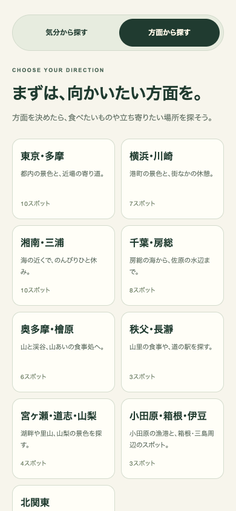
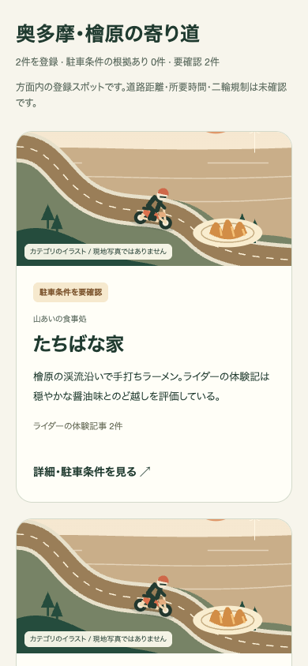
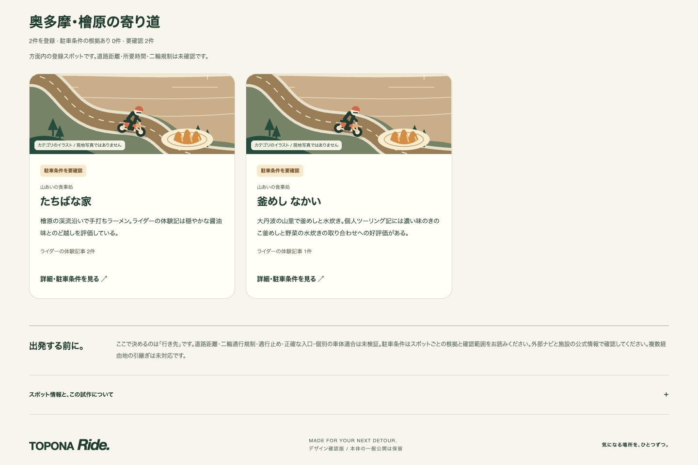
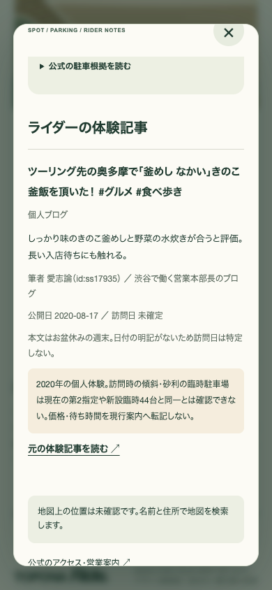

気分から探す
出発エリア → 希望距離 → 海・山などの気分 → 最大3つの候補
これまでの提案・地図・詳細・Google マップ連携を保持しました。
PICK A DIRECTION. FIND A DETOUR.
TOPONA Rideに「方面から探す」を追加しました。これまでの気分・距離からの検索を残し、9つの方面とスポットの種類で探せます。漁港・道の駅・山あいの食事処を9地点加え、52地点のデータベースをこの新しい探し方につなぎました。
実際の操作を動画で見るこのページは制作報告です。Ride本体の一般公開は保留しています。
音声・日本語字幕付き。VOICEVOX:ずんだもん／ノーマル。操作部分は実画面の等速録画です。
出発エリア → 希望距離 → 海・山などの気分 → 最大3つの候補
これまでの提案・地図・詳細・Google マップ連携を保持しました。
方面 → 漁港・道の駅・山あいの食事処などの種類 → 該当するスポットの一覧
気分でも絞れます。駐車条件の確認が必要なスポットは、表示を切り替えると見られます。

方面を選ぶと、その方面の中で候補を探します。条件に合う登録がなければ、0件と表示します。

駐車条件の根拠があるスポットを最初に表示。要確認の店も見たいときは、切り替えて比較できます。
2026年11月8日の調査時点で、全52地点のうち駐車条件の根拠が揃う候補は18地点。残る34地点は保留です。今回追加した9地点も保留として登録しています。
二輪で訪問した記録と、現在の公式駐車条件を分けています。「おいしい」「人気」は筆者の体験や施設の紹介として扱い、全員に共通する順位にはしていません。

TOTOCOの二輪15台、施設内の普通車43台、県駐車場117台は別に記録。なかいの各区画を合算した74台も、公式の普通車合計として扱っていません。

体験記事は9件を追加し、合計23件・19地点へ。個人ブログ22件と主催者の記事1件を区別して表示します。訪問日が不明なら不明のまま残し、公式の駐車情報とは別に読めます。とみうらの記事1件は、当日のバイク訪問を本文で確定できず、体験記事への採録を見送りました。
検索・推薦の検査が成功
データベースの検査が成功
画面操作の検査が成功
スマホ・タブレット・パソコン相当の3種類の幅で操作を確認。これまでの検索を保ち、方面・種類・気分の組合せ、0件、保留、情報の期限切れ、読込失敗時も確認しました。
道路での距離・所要時間・現在の二輪規制・正確な駐車入口・お使いのバイクで駐車できるかは未確認です。方面名から探す機能で、ルート沿いの自動検索や経路作成ではありません。群馬など遠方の日帰り可否も別途判断が必要です。
地図上の位置が未確認の新規地点には、距離や場所を示す印を作っていません。Google マップでは名前と住所で場所を検索します。
本体は作業版で確認し、一般公開は保留のまま。実際のiPhoneでの操作確認も未実施です。このページでは画像と動画をご覧になれます。